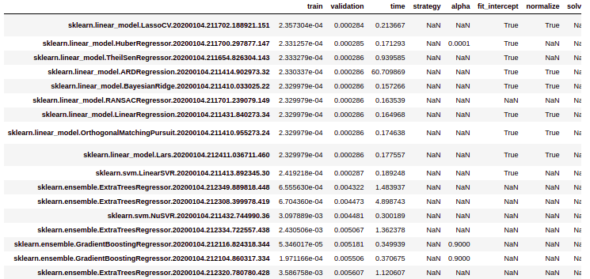

Model Search
LogMl can perform model search, that is, fit many different models and rank them according to their (validation) performance.
Models used in model search (these models are based on SciKit-Learn):
- sklearn.dummy.DummyClassifier
- sklearn.dummy.DummyRegressor
- sklearn.ensemble.AdaBoostClassifier
- sklearn.ensemble.AdaBoostRegressor
- sklearn.ensemble.BaggingClassifier
- sklearn.ensemble.BaggingRegressor
- sklearn.ensemble.ExtraTreesClassifier
- sklearn.ensemble.ExtraTreesRegressor
- sklearn.ensemble.GradientBoostingClassifier
- sklearn.ensemble.GradientBoostingRegressor
- sklearn.ensemble.HistGradientBoostingClassifier
- sklearn.ensemble.HistGradientBoostingRegressor
- sklearn.ensemble.RandomForestClassifier
- sklearn.ensemble.RandomForestRegressor
- sklearn.linear_model.ARDRegression
- sklearn.linear_model.BayesianRidge
- sklearn.linear_model.HuberRegressor
- sklearn.linear_model.Lars
- sklearn.linear_model.Lasso
- sklearn.linear_model.LassoCV
- sklearn.linear_model.LinearRegression
- sklearn.linear_model.LogisticRegressionCV
- sklearn.linear_model.OrthogonalMatchingPursuit
- sklearn.linear_model.PassiveAggressiveClassifier
- sklearn.linear_model.Perceptron
- sklearn.linear_model.RANSACRegressor
- sklearn.linear_model.Ridge
- sklearn.linear_model.RidgeCV
- sklearn.linear_model.TheilSenRegressor
- sklearn.naive_bayes.BernoulliNB
- sklearn.naive_bayes.ComplementNB
- sklearn.naive_bayes.GaussianNB
- sklearn.naive_bayes.MultinomialNB
- sklearn.neighbors.KNeighborsClassifier
- sklearn.neighbors.KNeighborsRegressor
- sklearn.neighbors.NearestCentroid
- sklearn.neighbors.RadiusNeighborsClassifier
- sklearn.neighbors.RadiusNeighborsRegressor
- sklearn.svm.LinearSVC
- sklearn.svm.LinearSVR
- sklearn.svm.NuSVC
- sklearn.svm.NuSVR
- sklearn.svm.SVC
- sklearn.svm.SVR
- sklearn.tree.DecisionTreeClassifier
- sklearn.tree.DecisionTreeRegressor
Note that Dummy models are included. Dummy models are useful as a simple baseline to compare with other (real) models.
Model Search with Hyper-parameter optimization:
Hyper-parameter optimization can be used in conjunction with model search for find a suitable set of hyper-parameters for each model. These are the models currently using hyper-parameter optimization in model search.
- sklearn.ensemble.ExtraTreesClassifier
- sklearn.ensemble.ExtraTreesRegressor
- sklearn.ensemble.GradientBoostingClassifier
- sklearn.ensemble.GradientBoostingRegressor
- sklearn.neighbors.KNeighborsClassifier
- sklearn.neighbors.KNeighborsRegressor
- sklearn.ensemble.RandomForestClassifier
- sklearn.ensemble.RandomForestRegressor
Results
Model search results are shown in a table, ranked by validation score. The table also shows: - train loss - validation loss - training time - all hyper-parameters used to create the model (NA if the hyper-parameters does not apply to a specific model)

Config_YAML
The config_YAML pard that refers to model search simply includes all model file YAMLs in a sub directory:
model_search:
enable: true
models: !include models_search/*.yaml
Each YAML file in the sub-directory models_search is a configuration for a specific model.
For instance, here is the configuration YAML for RandomForestRegressor, you can see how default parameter values and hyper parameter optimization:
RandomForestRegressor:
functions:
model_create:
bootstrap: true
criterion: mse
max_features: auto
min_impurity_decrease: 0.0
min_samples_leaf: 1
min_samples_split: 2
min_weight_fraction_leaf: 0.0
n_jobs: -1
n_estimators: 100
oob_score: false
verbose: 0
warm_start: false
hyper_parameter_optimization:
enable: true
algorithm: tpe
max_evals: 100
show_progressbar: true
space:
model_create:
max_depth:
- uniformint
- 2
- 30
max_features:
- uniform
- 0.3
- 1.0
min_samples_split:
- uniformint
- 2
- 20
min_samples_leaf:
- uniformint
- 1
- 100
n_estimators:
- uniformint
- 2
- 1000
model:
model_class: sklearn.ensemble.RandomForestRegressor
model_type: regression